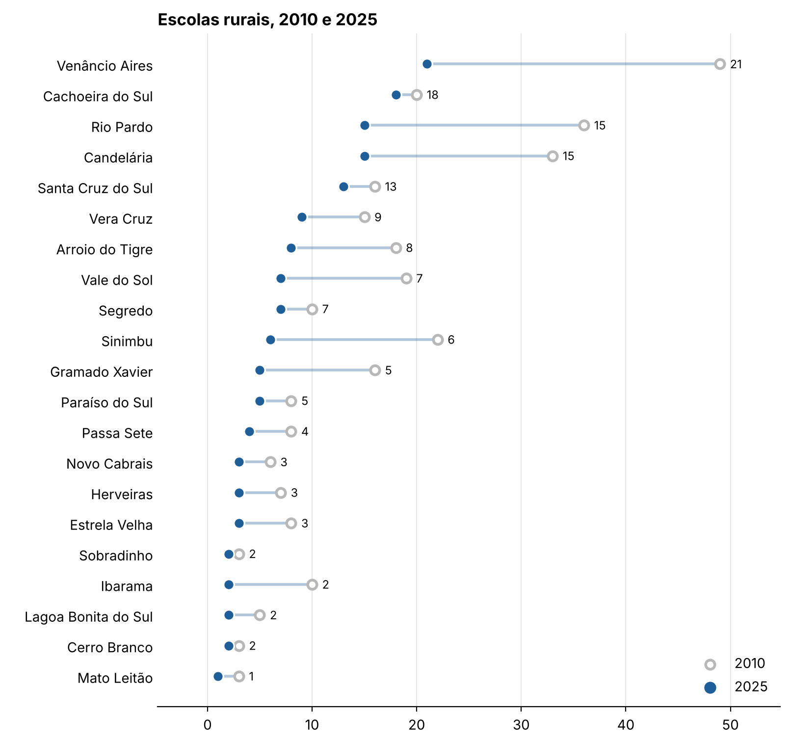

Perguntas concretas
O projeto parte de perguntas concretas sobre a região: Candelária encolheu? As escolas rurais estão fechando? A alfabetização melhorou? Para responder, montei três recortes: Candelária e os 8 municípios vizinhos, Novo Cabrais e os 4 vizinhos, e os 16 municípios da microrregião de Santa Cruz do Sul do IBGE. Juntos são 21 municípios, com o Rio Grande do Sul e o Brasil como referência.
Um pipeline reprodutível
Cada recorte tem um notebook que roda no Google Colab do começo ao fim. Ele consulta a API do SIDRA (mais de 20 tabelas, de população e cor ou raça a renda, saneamento e agropecuária) ou baixa os microdados do Censo Escolar do INEP, um arquivo por ano, filtra as escolas em atividade dos 21 municípios e gera a planilha, os gráficos e um arquivo compactado com tudo. A escolha de baixar das fontes, em vez de guardar planilhas editadas à mão, permite que qualquer pessoa refaça os números e que eu atualize tudo quando sai um ano novo.
Comparar só o que é comparável
A maior parte do trabalho não está no código, está nas notas. Alguns exemplos que ficaram documentados na aba Leia-me de cada planilha:
- Valores em reais de 2010 foram corrigidos pelo IPCA para julho de 2022 antes de comparar renda e PIB.
- As perguntas sobre água e esgoto mudaram em 2022, então a comparação com 2010 é aproximada.
- "Pessoas ocupadas" não é comparável: 2010 conta todos os ocupados, 2022 só os com rendimento.
- Em 2025 o INEP tirou matrículas, turmas e professores da tabela de escolas, então esses indicadores param em 2022.
- Professores são somados por escola: quem dá aula em duas escolas conta duas vezes.
Um erro da primeira versão também ficou registrado: a planilha de alfabetização tinha o grupo de 65 anos ou mais zerado em 2010, o que deixava a taxa daquele ano alta demais.
O que os dados mostram

Na microrregião de Santa Cruz do Sul, as matrículas da educação básica caíram 10% de 2010 a 2022, mas as de creche subiram 75%. As escolas em atividade foram de 431 para 343 até 2025, e as rurais, de 242 para 108. Na alfabetização, todos os 16 municípios melhoraram, e a taxa da região subiu de 94,6% para 96,3%.
Do notebook para as pessoas
Os mesmos dados viraram entregas para públicos diferentes: infográficos em PDF para cada recorte, uma matéria de jornal sobre Candelária, uma matéria no jornal O Correio sobre a pesquisa de Novo Cabrais, o painel interativo de dados da educação na região e a página Novo Cabrais em 12 anos. Os bastidores do painel estão no blog.